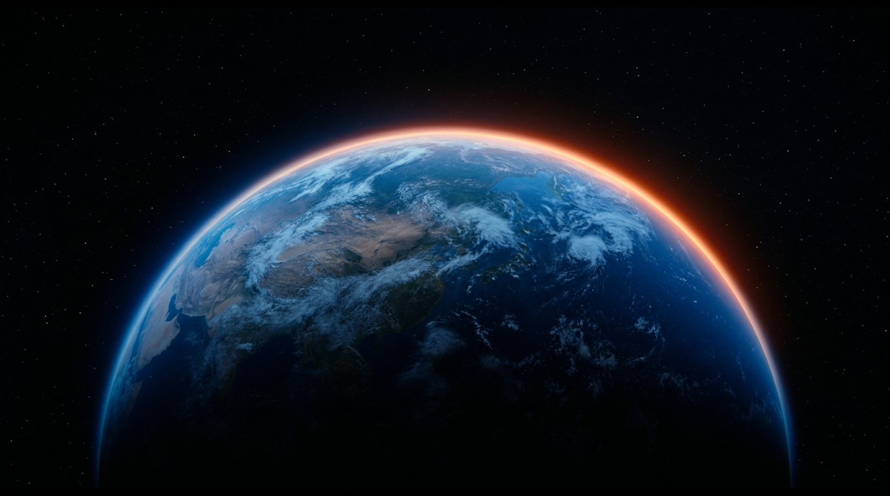

Desenvolvimento humano
Educação, conhecimento, saúde, razão, consciência e desenvolvimento das capacidades humanas.

A humanidade pode escolher um futuro.
Um futuro em que o desenvolvimento humano, a cooperação e a preservação da vida se tornem mais importantes do que os conflitos e a destruição.
Nosso conhecimento e nossas tecnologias dão à humanidade uma capacidade sem precedentes de moldar o futuro. A próxima etapa do desenvolvimento da civilização deve ser definida não pela violência de uma parte da humanidade contra outra, mas pela nossa capacidade de preservar a vida, desenvolver as capacidades humanas e criar.
O desenvolvimento humano deve se tornar uma das principais tarefas da civilização: desenvolver a razão, a compreensão do próprio «eu» e as capacidades criadoras — a capacidade de estudar, criar, cuidar e cooperar.
Educação, conhecimento, saúde, razão, consciência e desenvolvimento das capacidades humanas.
A capacidade de compreender, investigar, trabalhar e se desenvolver em conjunto.
A investigação aberta do ser humano, da consciência, da vida, da Terra e do Universo — distinguindo claramente fatos, hipóteses e suposições.
Países, culturas, línguas e tradições podem preservar sua singularidade. Ao mesmo tempo, podemos reconhecer nossa identidade comum como seres humanos da Terra. Este é o próximo nível de autoconsciência da humanidade e de autoidentificação de cada pessoa.
Sou um ser humano da Terra.
Uma introdução de três minutos à ideia. A versão em russo está disponível agora. Uma versão em inglês estará disponível mais tarde.
A humanidade possui enormes conhecimentos, tecnologias e capacidades, mas uma parte considerável dessa energia é direcionada para conflitos e destruição. A próxima etapa do desenvolvimento da civilização pode consistir em aprender a criar em cooperação uns com os outros e com o planeta.
Explore project materials →Não uma civilização que conquistou a Terra, mas uma civilização que aprendeu a ser guardiã da vida na Terra.
Participar do diálogo